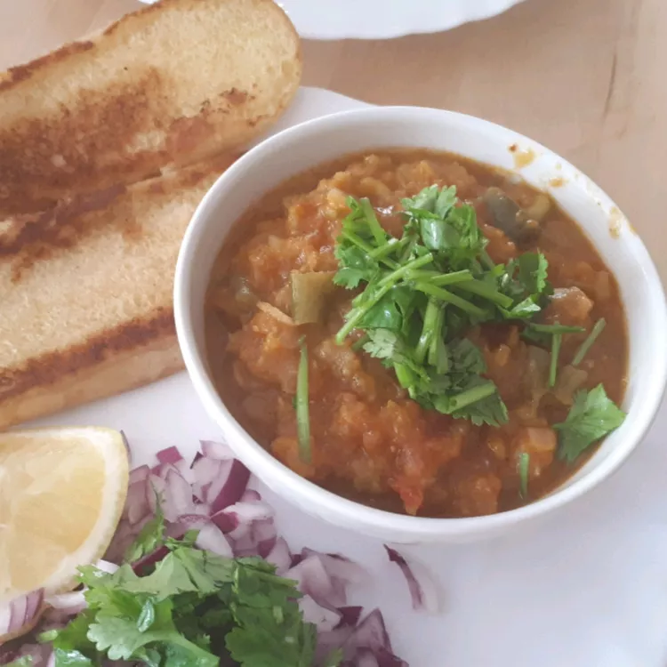

Pav Bhaji.webp

Description
This is a very popular recipe in India, liked by almost everyone. You may have to go to a nearby Asian Indian store to get the 'Pav Bhaji Masala' that is the special spice to bring the flavor (Masala means spice)
Pav is actually the buns. Bhaji is the vegetables cooked with spice.
-
½ cup vegetable oil
-
2 teaspoons chopped garlic
-
1 teaspoon finely chopped green chile peppers
-
1 cup chopped onions
-
2 teaspoons grated fresh ginger
Steps
-
Heat the oil in a wok over medium heat. Saute garlic and green chile for 30 seconds, then stir in onions and ginger.
- Cook until onions are brown.
- Add tomatoes, and cook until pasty.
- Stir in cauliflower, cabbage, peas, carrots and potatoes.